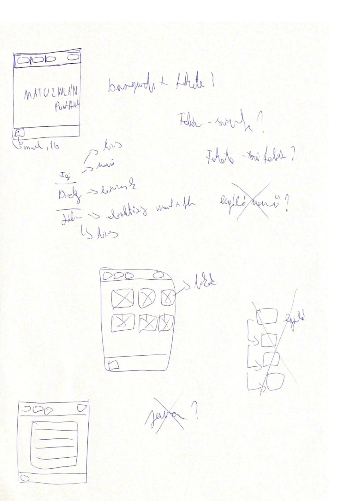

Dokumentáció
Tervezés
A feladat számomra legnehezebb része az "ihlet" volt. Pontosabban egy olyan ötlet megtalálása amelyet a jelenlegi eszköztárammal képes vagyok megoldani. Az első oldalt és a weboldal színeit számtalanszor átdolgoztam, amíg egy számomra elfogadhatót találtam. Sok dolgot szerettem volna még megcsinálni, nagyon megtetszett a html, biztosan fogok próbálkozni és szeretném megtanulni a nyelvet is.
Nehézségek
Nem szeretném nagyon ragozni, a feladat minden aspektusával voltak problémáim..Az előrehaladás viszont kimondottan jó érzés volt. A félévben tanult nyelv, a C# számomra segítség volt a feladat megoldása során.Források
w3schools.comstackoverflow.com
youtube.com